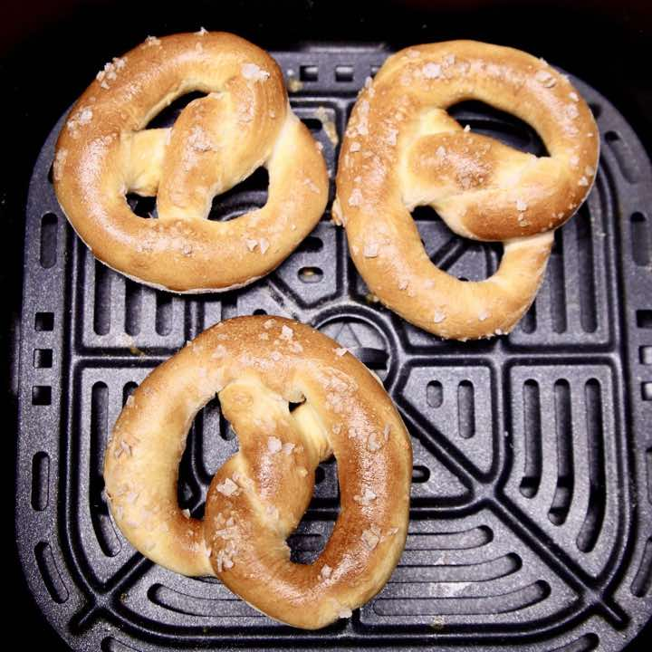

Air Fryer Soft Pretzels
AppetizerBread
Servings16
PrepPT15M
CookPT6M

Ingredients
- 1 1/2 cups warm water (100°)
- 1 tablespoon dry active yeast
- 1 tablespoon sugar
- 1 tablespoon olive oil
- 3 1/2 - 4 cups all purpose or bread flour
- 1 teaspoon kosher salt
- 1 large egg
- 1 tablespoon water
- flake sea salt
Directions
- Add warm water - about 100° to a large bowl with yeast, sugar and olive oil. Stir to combine and set aside about 5 minutes.
- Add 3 cups of flour with a teaspoon of kosher salt.
- Stir together with a dough whisk or wooden spoon until dough forms a ball.
- Turn dough out onto a floured surface. Knead for 3- 5 minutes until dough is no longer sticky, adding flour 1 tablespoon at a time if needed.
- Divide dough in half. Work with half of the dough at a time.
- Divide each dough half into 8 pieces.
- Roll the dough into about a 18 inch rope. Dough can be rolled on the floured surface or between your hands. If dough is resistant to shape, allow it to rest a few minutes and try again.
- Form the dough into a U shape.
- Twist the ends twice.
- Fold the ends over the round part of the dough.
- In a small bowl, beat the egg with a tablespoon of water.
- Brush both sides of the pretzel dough with the egg wash.
- Lay the pretzels into the air fryer with space in between.
- Sprinkle flake salt over the pretzels.
- Cook pretzels at 370° for 6-7 minutes or until golden brown.
- Remove to a wire rack to cool.
- Repeat with remaining pretzels.
Notes
RECIPE TIPS AND VARIATIONS:
Yield: 16 pretzels
Easy Cheese Sauce: Melt 12 ounces Velveeta cheese with ½ cup milk over medium heat, stirring until melted.
Tips: Brush the egg wash over the pretzels just before adding to the air fryer for the easiest handling.
Garlic Butter Pretzels: Brush baked pretzels with melted garlic butter.
Cinnamon Sugar Pretzels: Skip the flake salt and brush the pretzels with melted butter after cooking. Sprinkle with cinnamon sugar before serving.
Oven Directions: Bake pretzels on a lined baking sheet at 375° for 8 - 10 minutes or until golden brown.
Storage: Store pretzels in an airtight container up to 24 hours at room temperature or up to 2 days in the refrigerator.
Freeze: Cooked pretzels can be frozen in a single layer in a freezer bag up to 3 months.
Reheat: Reheat thawed pretzels in air fryer at 350° 1- 2 minutes. For frozen pretzels 3- 4 minutes.
Source
https://www.missinthekitchen.com/air-fryer-soft-pretzels-recipe/
This page includes Schema.org Recipe structured data for recipe importers.